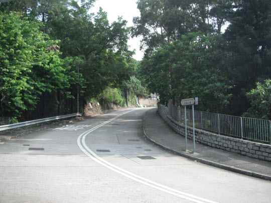
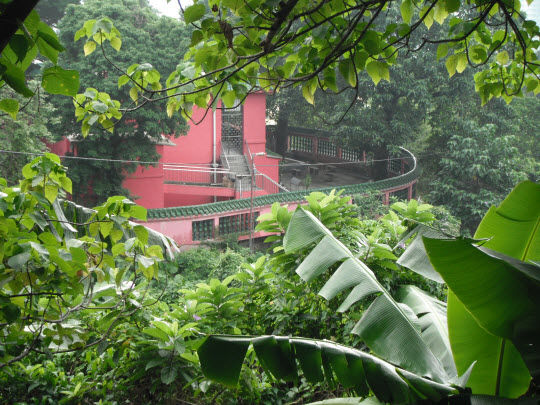
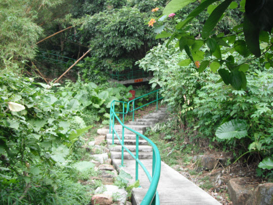

我兒時居住在荃灣山坡上的老圍村的一間簡陋村屋, 大概在現今石圍角酒樓的位置, 與芙蓉山只是一條大河(三疊潭)之隔。 只要輕輕抬頭一望, 竹林禪院就巍然聳立在芙蓉山麓之中, 一條像絲帶的狹窄長長石階小路, 從竹林禪院左旁沿山蜿蜒而上, 有衝上雲霄之勢, 直到山巔之處; 石階小路盡頭是一塊巨大石頭, 石上刻有紅色「佛」一大字, 十分莊嚴。現在小路已給樹林掩蓋, 只可靠記憶勾劃出它的存在, 而紅色「佛」字石頭仍然可清晰看到。
當年的三疊潭(河)十分寬闊, 記憶中大概是一個正規足球場的闊度, 深度約六層樓的高度, 所以村民都稱之為「大坑」。大坑源頭來自大帽山, 平時流水淙淙, 環境十分優美, 村民很容易踏河流上的石頭穿梭老圍村和芙蓉山兩地之間。但每逢滂沱大雨, 河水會突然急漲, 水位往往上昇至四層樓的高度, 這時大坑便變成一條水流兇猛的滾滾黃河, 不斷翻騰而下, 場面驚心動魄。
我兒時經常到竹林禪院及佛字石刻(觀音巖)遊玩, 主要原因可能是朝晚相對, 而距離住所又不太遠, 所以自然成為「經常遊玩」的目標。當年從我家往竹林禪院十分方便, 沿家門前的行人小路向上走約五分鐘便抵河邊, 向下走百多級的石階, 到達河床, 然後像小麻雀一般的動作, 在河床上穩固的石頭跳躍走到河的對面, 接著沿彎彎傾斜泥路向上走, 這樣便到達河的對岸了。繼續向山上走, 穿過馬閃排村的巷陌, 沿蜿蜒山路走一會便到達竹林禪院的正門了, 全程約五十分鐘。
芙蓉山離我現在居住的地方不遠, 所以至今仍然是我「經常遊玩」的目標, 其實應該改為是我「經常晨運」的目標才是。今天適逢十月一日國慶, 就拿起相機, 記錄從兒時至今已經遊玩了無數次的景點。
從熱鬧的愉景新城穿過行人天橋, 便是幽靜的郊野公園。
行人路微微向上傾斜, 十分好走。
這榕樹見證了香港不少歷史。
走一會抵荃錦公路。
走過荃錦公路, 已經進入芙蓉山的範圍。接著走上約一百級的石階。
走上 石階, 迎面是芙蓉山路。
從這裡開始, 沿途都會經過很多寺院, 大多數都是依山而建。芙蓉山應該是香港最多寺院的地方。
繼續向山上走。竹林禪院就在上面馬路的拐彎處, 是我兒時經常遊玩的地方。 不過, 當年不是從這方向前往竹林禪院的, 而是穿過馬閃排村的巷陌抵達。
還未抵竹林禪院。馬路旁有一石階路蜿蜒而上, 路牌的指示是往結蓮庵, 這裡也是「菩提徑」的起點。

今天的行程便從這石階路進入山區, 沿菩提徑向上走, 從北至東在山中繞一圈。途中會經過結蓮庵、上天竺等等著名寺院, 抵我兒時經常遊玩的紅色「佛」字石刻(觀音巖), 最後沿林陰小陘下山才到竹林禪院。
裡的環境十分幽雅, 令人心平氣和。
看到第一個菩提徑的指示路牌了, 是菩提徑的起點。 從這裡開始, 暫時放下世間的煩惱, 或何妨以不了了之的心態來處理?
至於菩提徑這名稱的由來, 相信是因為芙蓉山四處遍佈寺院, 形成了一個「菩提園」。而從山腳連接各寺院至山頂結蓮庵的一段小徑便被稱為菩提徑。
經過芙蓉山盧禪。
回頭看看剛才走過的小路, 環境真是十分優淨。
從芙蓉山盧禪門前的小路承繼續向山上走。
菩提徑沿途都有往結蓮庵的指示路牌, 不會迷途的。 這裡沿途可能會遇上一些流浪狗隻, 不理會便可以了。千萬不要害怕, 狗隻是感覺到人們恐懼的。
沿途的溪澗。
繼續沿菩提徑向山上走。又有往結蓮庵的指示路牌。
山路彎彎曲曲蜿蜒而上, 其實是很容易走的。
進入山區了。

經過仙桃石。不要偷吃呀!
木魚石。

仙桃石和木魚石。
繼續往山上走。
沿途有很多俗稱「五爪金龍」的牽牛花。

還有細小品種的粉藍色牽牛花。
還有雛菊。
路邊還有很多不同品種的花朵….. 。
回頭俯瞰荃灣市區, 已經走了很多路 。
路旁有很多香蕉樹, 樹上長年長滿一串串的香蕉, 千萬不要採摘, 否則…..。
到達一個三叉路口。沿右邊陰森的小路(菩提徑)走。不用害怕, 十分安全的。
進入小路。
接著走下山谷。
經過深山中的一間寺院。
小路(菩提徑)又開始往上走。
繼續往山上走, 開始有幽深的感覺。
沿途都可看到一串串的香蕉。
又有菩提徑的指示路牌。
走過慈音橋。
繼續往山上走。
來到獅王石。
獅王石上的關公像。
繼續往山上走。

形態十足的蟾蜍石。
抵達深山中的結蓮庵了。
從左邊的石階小路往上走可往結蓮庵的側門。
繼續沿菩提徑向上走, 其實這裡是往結蓮庵的正門。左邊用鐵皮搭建的建築物便是結蓮庵的外牆。
左轉鐵皮中有一道門, 其實是公共廁所, 不過, 用完記得沖水。
很久以前是不需要這告示牌的。
繼續沿菩提徑向上走。
到達蓮界香海。
站在這裡向南望, 荃灣市區盡入眼簾。在我兒時的時候, 荃灣的海灣從這裡可清晰的看見, 從左至右, 整個海灣就展現眼前, 可惜現在海灣已經給所有高樓遮蓋了, 換來是另一個景色。
抵結蓮庵的正門。
從結蓮庵旁的石階往上走是菩提徑最後的一段, 也差不多是菩提徑的終點了。如繼續往上走便可抵大帽山溪澗, 即荃錦公路、大帽山溪澗、西竺林襌院晨運路線其中的一段。
今天不往上走了, 離開菩提徑往東走, 繼續向前走吧。
經過芙蓉山另一著名寺院上天竺。
繼續向前走, 回頭望望山中的上天竺。
站在這裡休息一會, 觀賞荃灣景色。
從這裡開始下山了。
沿小路一直往下走, 不會迷路的。
終於到達觀音巖, 即是我兒時經常遊玩的紅色「佛」字石刻。
從樹隙中隱隱看見大大紅色「佛」字石刻。
繼續往下走。
觀音巖現在是不可以隨便進入。在我兒時來遊玩的時候, 觀音巖是可以進內, 紅色「佛」字石刻是差不多可以觸摸到的。
繼續一直往下走。我兒時便是從這裡上山往觀音巖的。
回頭望望觀音巖。
如果從這方向往觀音巖, 沿途也有很多指示路牌。
右邊有一隱蔽小路, 是往虛雲和尚紀念堂的。


開始看見竹林禪院的指示路牌。 距離竹林禪院不遠了。
繼續往下走。沿途有很多往觀音巖的指示路牌。
看到竹林禪院的寶殿了。繼續往下走。
回頭望望觀音巖的大門。我兒時在竹林禪院遊玩後, 便是從這裡上山往觀音巖的。 當年的路十分簡陋, 都是泥濘小路, 沒有現在那麼現代化。現在絕大部份的信眾和遊客都是在這裡往觀音巖, 主要原因是汽車可直接到達。
穿過觀音巖的大門, 繼續往下走, 拐個彎便到達今天晨運的最後目的地竹林禪院。

繼續往下走二分鐘, 便回到剛才上山的起點, 也是菩提徑的山腳起點。就這樣從北至東在芙蓉山中拐了一圈。
再回頭向上望望剛才走過的路。左邊是竹林禪院的外牆, 十分幽雅, 明顯比結蓮庵的外牆美觀很多。
接著遁原路慢慢的走回家中, 結束了這一天的晨運, 全程約三小時。